A basic flight simulator tutorial
Foreword
Aviation is about extremes:
- An airplane is
quite fragile and flies at huge speed. Yet it is one of the most secure
transport devices.
- A pilot constantly follows
rules and
procedures. Yet an airplane is a symbol of freedom.
- Once you are
trained, flying a little aircraft is easy. Yet if a problem occurs,
you have to sort of solve a rubicube in a few seconds.
- Many flight tutorials are
written with a lot of humor. Yet
an attempt
to make humor or show your skills with a real aircraft will bring you
before a court.
This tutorial is based on the Cessna 172p, which is the default
aircraft on lots of flight simulators and a great airplane:
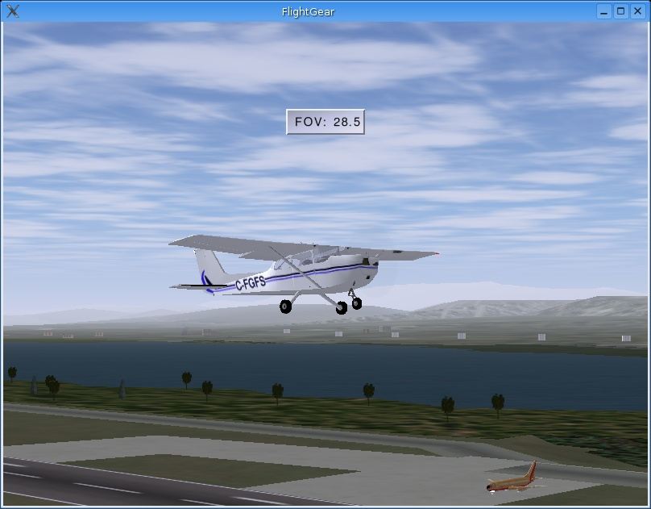
Possibly take a look at these Wikipedia articles:
I did my best not to tell too much nonsense. I apologize for
the bad habits or reflexes you may get due to this tutorial. It
contains for sure some ugly mistakes.
Software
I assume you are using the flight simulator FlightGear. Go to
the Web site http://www.flightgear.org
to
get FlightGear's binaries and all kinds of great downloads and
documentation. It's free. (Some Linux releases include FlightGear on
their installation CD's or DVD.)
I assume you know how to download and install FlightGear on your
particular Linux, Windows or Mac OS release. Or you know a person that
can do that for you.
- On Windows,
FlightGear lets you choose an aircraft and airport.
To best match
this tutorial ask for a Cessna 172p aircraft and San Francisco airport
(KSFO).
- On Linux, it
can be FlightGear is installed but
you see it nowhere in the menus. Then open a terminal window (also
named "console" window) and type the fgfs --timeofday=noon
command (and type the Enter
key) to start FlightGear.
If the FlightGear window you get is too little, close it and maybe
restart FlightGear with this command: fgfs --timeofday=noon --geometry=1024x768
It you don't use the --timeofday=noon
option, it often happens that FlightGear
starts in a night
environment. To get a daytime environment, use the Weather
menu. Choose
Time of day.
In the dialog box ask
for say Noon.
Then click Dismiss:
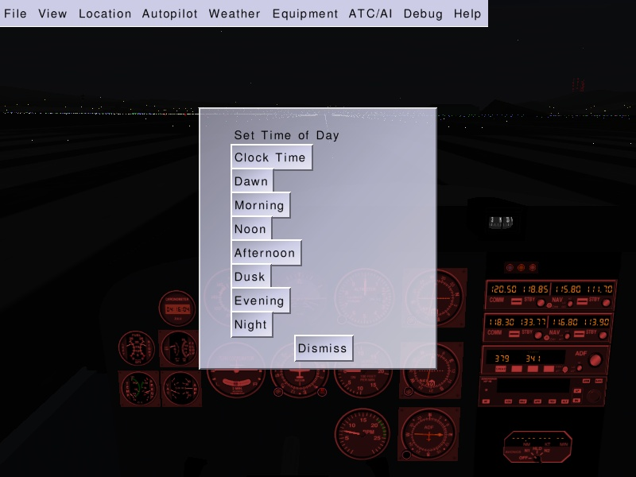
(If FlightGear is available in your KDE
or
Gnome menu, you can edit the FlightGear launch icon properties and
change the simple fgfs
command to something
like fgfs --geometry=1024x768 --timeofday=noon
or to whatever command options you require. You can use
any other resolution you want instead of 1024x768. (I try to keep a
4x3 ratio.))
Hardware
I assume you are using the regular mouse and keyboard of your
computer. You need no joystick nor plastic pedals or control yoke to
use the
flight
simulator. Such hardware would be more realistic
(especially with force feedback). Yet I don't own any myself
and I
suppose most flight simulation candidates don't.
You need a 3D accelerated graphics card inside your
computer and its proper drivers installed. Don't bother if you don't
know what this is. Today most computers are sold with such a graphics
card. Simply install the flight simulator software and start it to
check you get a fluent display. If not, either an accelerated 3D
graphics card isn't installed or its drivers aren't properly installed.
Get help.
Sound is not mandatory but it really helps. For example when landing
you need to hear the wheels touch the runway.
The basic catastrophe: fly
straight
Once FlightGear is started you see this window and you hear the sound
of an engine:
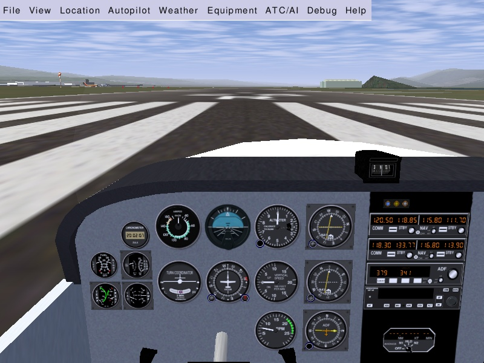
The airplane engine is on, at low power. The aircraft
trembles a little, yet it doesn't move.
About the keyboard:
- In this tutorial and in the
FlightGear documentation, a
lowercase
key means you simply hit that key. An uppercase means you shift that
key. (The Shift
keys are those two keys with a hollow fat arrow pointing upwards.) In
other words:
if you are told to type v,
simply hit the v
key briefly. If you are told to type V,
push a Shift key down and
keep it pushed down, hit the v
key, then release the Shift
key. (In short: V
is the same as Shift-v.)
- I assume you let the Num Lock
on. That
is a little green lamp at the right of
your keyboard. Type the Num
Lock
key till the lamp is on. Hence I assume you will use the Home, End, Page Up and Page Down keys located above the
four cursor keys. You can switch Num
Lock to off and use the keypad for Home, End, Page Up and Page Down. Your choice. But this
tutorial supposes Num Lock is
on.
Type key v
to see the
aircraft from the outside. Type v
several
times, till you get back inside the aircraft. (Typing V
makes you cycle backwards through the views.):
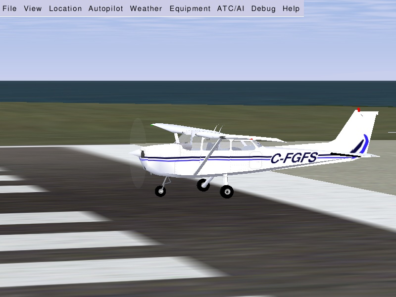
!
Each time before you step inside
a real
airplane, you have
to inspect the airplane all around to check every part of it. Nothing
hampering the moving parts, nothing obstructing the instrument
openings...
Hold the Page Up
key
down for eight or so lengthy seconds. You hear the
engine sound rise.
The aircraft starts moving. It drifts to the left,
accelerates, rises in the air, banks to the left, falls to the ground,
hits it, rises again and crashes.
Maybe you wish to see a replay of this: use the View
menu, choose Instant
Replay,
then click the Replay
button
at the
bottom of the dialog window. (Use v
and V to
see the airplane from
the
outside.) The picture below shows the end part of the flight. (Type key
F3 to make a
snapshot. Key F10
to remove the menu.)
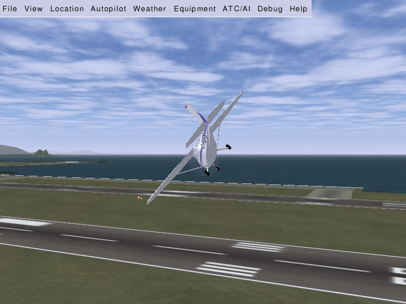
Close the FlightGear window and start a new FlightGear window.
In order to fly straight you need the aircraft control yoke:
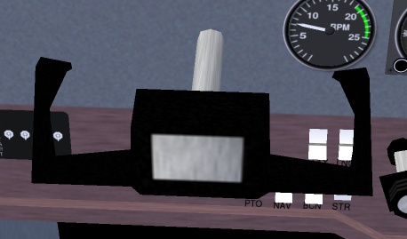
Move the yoke by moving the mouse. For this you need to
be in mouse yoke mode.
Get in that mode by clicking the right mouse
button. The mouse cursor becomes a +
sign. Move the mouse and see the control yoke moving accordingly. Type v
to see the plane from the outside. Again move the mouse and see the
tail elevator moving and the ailerons at both wings ends. (Type x
a
few times to see the airplane
from a closer point of view and better see the ailerons moving up and
down. Type X
to zoom back out.
Ctrl-x
for default zoom. Type V
to get back inside
the plane.)
!
Each time you start
flying a real
airplane, you have to
visually check that moving the control yoke makes the ailerons and
elevator move.
One more click on the right mouse button gets you in mouse view mode.
The
mouse cursor becomes a <->
sign. This allows you to move your
virtual head all around. Click the left mouse button to center the view
back
in. A
third right-click will bring you again in standard mouse pointer mode.
The
right mouse button cycles you through three modes:
- Normal mouse pointer mode. This mode allows to click on the menu
and on the instrument panel.
- Yoke mode. The mouse controls the yoke (+ pointer shape).
- View mode. The mouse controls the direction you look towards (<-> pointer shape).
Restart the flight simulator, right-click to put the mouse in control
yoke mode (+)
and put the engine throttle on
maximum by holding Page
Up
down. Do not
try to keep the aircraft rolling straight on the runway using the
mouse/yoke. Let it drift leftwards. Wait till it rises in the air.
Then use
the mouse to try to get the aircraft fly straight. (If you want to
control the aircraft on the ground see chapter Turning on the ground.)
You have to prevent the aircraft from banking to the left:
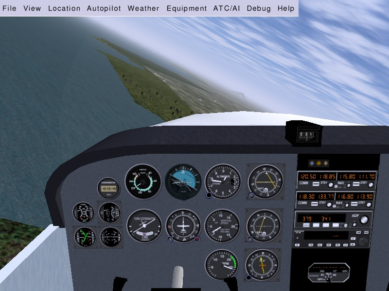
Prevent it from banking to the right:
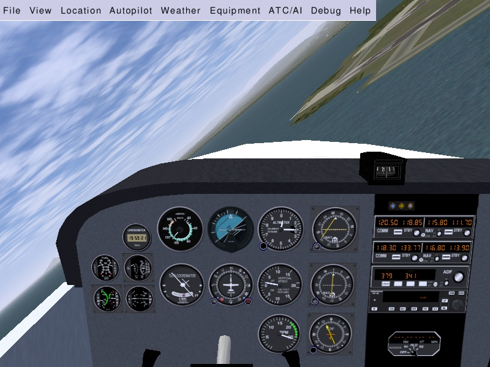
Prevent it from plunging to the ground:
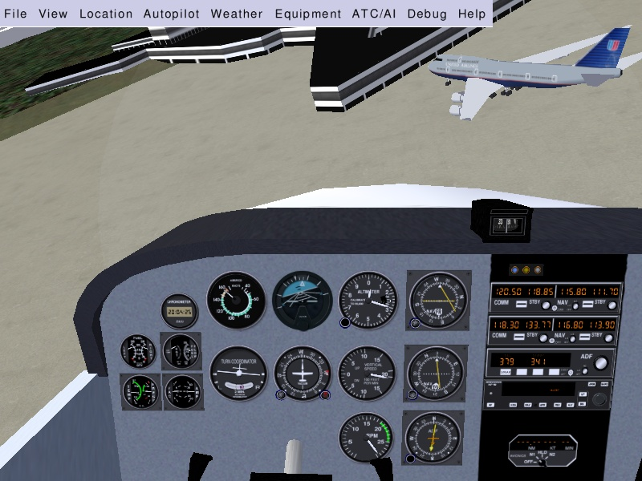
Prevent it from rising its nose in the air (and the stall warning siren
yelling):
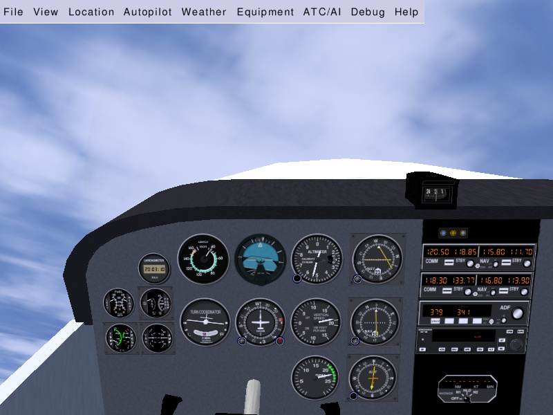
Try to fly more or less straight, with the horizon stable above the
aircraft nose:
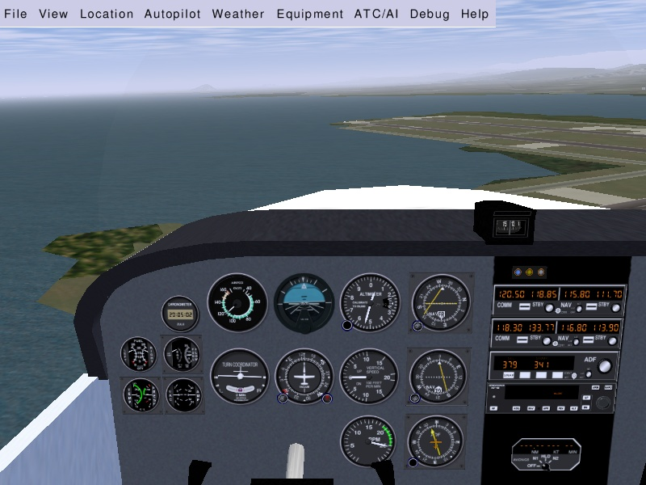
Whatever your skills at video games or maybe even air combat
simulators, you
won't succeed. The aircraft will crash, probably even faster than when
you didn't try to control it. This is the moment where most candidates
get
desperate and abandon trying to fly a simulator or a real aircraft.
Just hold tight.
Keep trying.
Five minutes every day. And read the
technical explanations below:
Most awful is this error: when the aircraft plunges to the ground, you
move
the mouse forwards (push the yoke). Because you want to move the
aircraft nose upwards.
Actually you have to do the opposite: move the mouse backwards (pull
the yoke).
Reciprocally, when you want the aircraft nose
to dive, you must move the mouse forwards. This can seem odd, but
all aircraft control yokes are designed that way. You have to
get used to it. (Little mouse moves have strong effects on the
airplane. Maybe decrease the mouse speed for your first virtual flight
attempts.)
A visualization may help: imagine a balloon is on your
desk and you put your hand flat on top of it. If you move your hand
forwards the balloon will roll and your hand will plunge to the desk.
If you move your hand backwards the balloon will roll back and
your hand will now be directed to the ceiling. Your hand is the
aircraft:
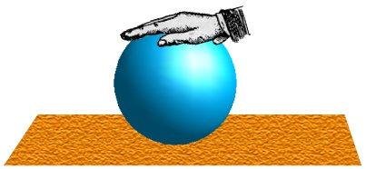
A second error is you assume the control yoke bank imposes the
aircraft bank. That means you believe if the control yoke is level, the
aircraft
will fly level. This is false. Actually the control yoke bank imposes
the speed
at which the aircraft banks. If the aircraft is banked 20°
to the left and the control yoke is level, the aircraft will stay
banked at 20° left forever (roughly speaking). If you want the
aircraft to bank back to level, you have to turn the control yoke
slightly to
the right (move the mouse slightly rightwards) and keep it slightly to
the right for a while. The aircraft will turn
slowly rightwards. Once it is level with the horizon, put the control
yoke level too.
Then the aircraft will keep level (for a short while).
A third error is you try to find "the right position" for the
yoke/mouse.
You try to find the fine tuning that will leave the aircraft fly
straight. Actually there exists no such ideal yoke position. The
aircraft is unstable. You constantly have to move the mouse a
little bit to correct the aircraft attitude and keep it
flying straight. This may seem a stressing
nightmare but you will become used to it. Just like driving a car.
After a few months you will even no longer notice you are guiding the
aircraft to fly straight. (You can use the autopilot to keep the
aircraft level during long flights.)
An important hint: don't keep your eyes on the aircraft instrument
panel or on the control yoke drawing. Keep your eyes on the
outside scenery
and especially the horizon. Check the angle of the horizon and its
height above the aircraft's white nose. The horizon line and the white
aircraft engine cover are your main flight
instruments. Look at the instrument panel
only once in a while.
(While the mouse is in yoke control mode (+), Don't move it outside of the
FlightGear window. It's useless and awful things will happen. If you
want to get the mouse outside of the window, first go back to standard
mouse mode by clicking two times on the right mouse button.)
You master the thing if, while you are flying straight, the aircraft
very steadily climbs in the air. Next step is to keep the aircraft at
more or less constant altitude or make it descend slowly then rise
again slowly.
The altimeter instrument is at the middle top of the instrument
panel. The long needle shows hundreds of feet. The short
needle
shows thousands of feet. Hence the altimeter below shows an altitude
of 300 feet. That makes roughly 100 meters.
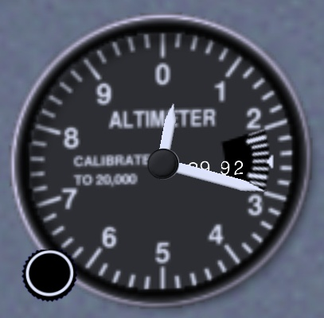
Beware: an altimeter does not show the absolute altitude above sea
level like you would wish. Rather it shows the relative altitude above
a fictitious altitude you tuned in. See the little black knob on the
down
left
side of the altimeter. Start FlightGear and stay on the ground. Click
(standard mouse mode)
inside the black knob. A click on
the left half makes the altimeter turn back. On the right half the
altimeter turns higher. You turn that little knob to tune in whatever
you
need. The principle is you use the knob when you are sure about the
altitude. (Clicking with the middle mouse button makes the knob turn
faster. Type Ctrl-C to see the two
button halves
highlighted.)
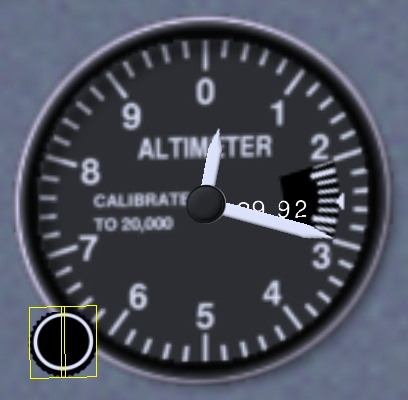
Basic turning
Once you are able to fly straight, even just approximately, you can
begin to learn to turn. The principle is simple:
- When the aircraft is banked
to the left, it
turns to the left.
- When the aircraft is banked
to the right, it
turns to the right.
Don't overbank. 20° is a good
bank to get a steady and
reliable
turn. This it what the turn coordinator is used for. On the picture
below
the
indicator shows the aircraft is banking 20° to the right. This
is
just fine to turn to the right:
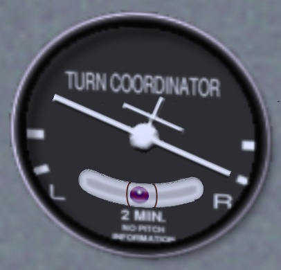
Try this out: keep the aircraft banked around those 20° for a
few
minutes and look at the outside. You will see the same ground features
appear again and again, roughly every 120 seconds. This shows you need
120 seconds
to make a 360° turn or 60 seconds for a 180° turn.
(This is utterly
important when navigating: whatever speed the aircraft is flying, if
you bank at 20° you always need 60 seconds to make a
180° turn. The
bank indicator and the clock are essential navigation instruments.)
(Note there seems to be a small error on FlightGear: a 180° takes 50
seconds instead of 60.)
So, by banking the aircraft to the left or to the right, you make it
turn to the left or to the right. Keeping the aircraft level with the
horizon keeps it flying straight.
(The little purple ball in the bottom of the turn indicator shows the
sideways forces. If you turn neatly (using the rudder a little bit),
the ball will remain centered. If the ball is pushed say rightwards,
this means you the pilot too are pushed rightwards. Like in a car
turning to the left. During a neat turn in an aircraft, even a strong
turn, the passengers never endure a sideways force. They are only
pushed a little harder on their seats.)
By experimenting you will notice you easily get fast and spectacular
turns by
banking the aircraft to strong angles and pulling on the yoke. It
would be mad to do this with
a real aircraft, unless you are a stunt pilot or military. This is an
example of cases for which you have to
decide whether you start the simulator to learn flying or for fun.
There
is nothing bad with the fun. The more fun you make, the better
understanding of the aircraft you get. That's one use of a flight
simulator and it's good for your security. But you also have to
train calm and realistic flying. Either you make a mad flight for fun
or you make a serious flight to mimic a real flight. Don't mix
these two modes.
Turning on the ground
The picture below shows the tachometer instrument. It displays how many
Rotations
Per
Minute
the engine is doing:
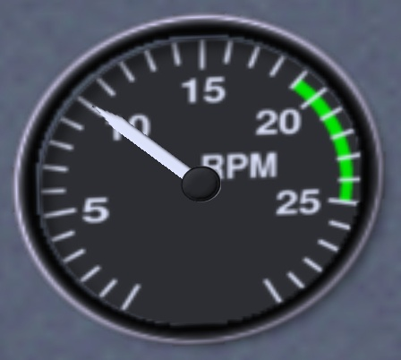
Start the flight simulator. Type the Page
Up key a few
times, till you get
the engine speed to 1,000 RPM.
(Typing the Page Down
key
decreases the engine speed.)
At roughly 1,000 RPM,
the aircraft will roll on the runway, but it will not accelerate nor
take off.
Type the "."
key (Shift-; on Azerty
keyboards). The aircraft
will make a sudden little turn to the right. If you keep the "." key down the
aircraft will halt.
When you type the "."
key, you
activate the brake on the right wheel of the aircraft. That makes
the aircraft turn right and halt.
To activate the brake on the left wheel, use the "," key.
The "," and "." keys simulate two
brake pedals
located at your feet on a real aircraft. This way you can control both
the speed and turn of the aircraft on the ground. (Some aircraft, like
the Hunter, can turn on the ground only by using this method.)
(For the hackers amongst you who own an Azerty keyboard and want to
tune in something more practical than ","
and "Shift-;" for the differential brakes.
Being
root, edit file keyboard.xml
(it is located at
/usr/share/games/FlightGear/data/keyboard.xml
on my computer). Around
line number 300 you should find two lines <key n="44">
and
<name>,</name>
and a little below two other lines <key n="46">
and <name>.</name>
. They are explicitely
followed by lines mentioning them as "Left brake" and "Right brake".
Change the first two lines to <key n="59">
and
<name>;</name>
and the two further below to <key n="58">
and <name>:</name>
to get ";" and ":" for the
differential brakes. (59 is the ASCII code of symbol ";" and 58 is the
ASCII code of symbol ":".))
The brakes are not an optimal way to turn on the ground, especially if
you intend to accelerate and take off. The most appropriate method is
to use the aircraft front wheel. You control the front wheel by using
the keypad 0 and Enter
keys. If you type
the keypad Enter
key say seven times, you will
see the aircraft firmly turns to the right and stays turning. Type the
keypad 0 key seven times
to get the
aircraft back rolling (almost) straight.
You're now able to control the front wheel. In a real airplane this is
done by pushing the rudder pedals with your feet. You push with your
feet on the side you want to turn towards.
(FlightGear allows you to control the rudder pedals with the mouse.
While the mouse is in yoke control mode, if you hold the left mouse
button down the mouse no more controls the yoke. Instead it controls
the rudder. This feature is absolutely marvelous. Take some time to
train using it.)
A drawback on FlightGear is you don't see the position of the rudder
pedals. To see it, two methods are available:
- Ask for the "panel", by
typing the P
key (Shift-p). Type P again to remove
the panel. The
little white cursor at the bottom of the I-shaped indicator shows the
position of
the rudder pedals. (That I-shaped indicator is just below the red BRAKE
light.) (Note the panel won't appear if the view is not
centered.)
- Ask for the Head-Up Display,
by typing the h
key. The picture below shows the HUD rudder
indicator. The green arrow is slightly to the right of the green center
line. This means the right rudder pedal is slightly pushed in.
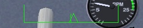
(Type h
several times to toggle
between two HUD colors and no HUD. Type H to change the HUD
color intensity.
Type I to
get a simpler HUD
(my favorite). The sequence of keys I use to get my favorite HUD is h H I. The picture below shows this
HUD. The uppermost and large scaled green indicator is the compass.
Just below
is the horizontal yoke/mouse/ailerons position. The arrow shows the
yoke/ailerons is centered. Full right of the picture is the engine
throttle lever position. The arrow at its bottom shows the throttle is
tuned to minimum. Full left of the picture are the trim and vertical
yoke/mouse/elevator position indicators (the trim is on the left side,
the yoke is on
the right side). The short green texts above on the picture, left and
right
from the HUD compass, are the plane GPS position. They are almost
unreadable on a standard 800x600 window like below. Either tune in a
black HUD (key H) or use a
larger window. 1200x900 is fine. The green HUD texts on the bottom of
the
window, left and right, contain valuable data. I don't use them in
flight. I rather use them during flight replays.)
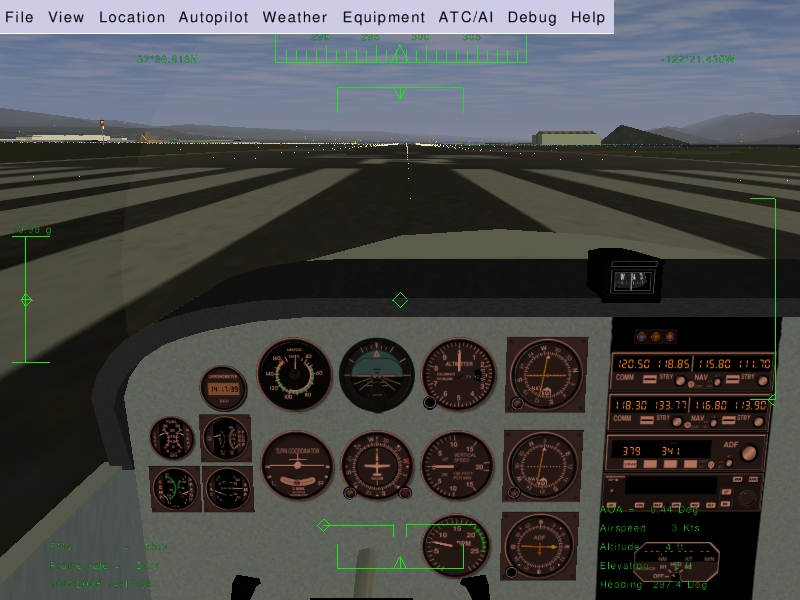
This is the airspeed
indicator:
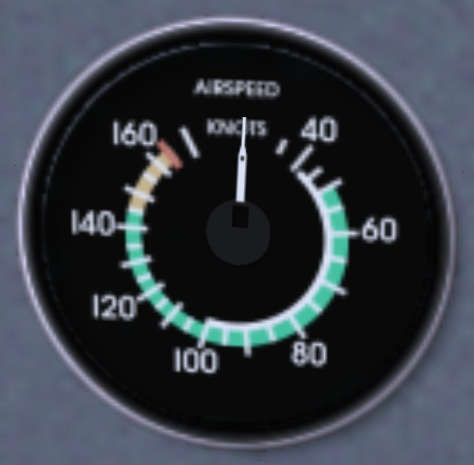
A knot is 1.85325 kilometer/hour. So, if you want to have a rough idea
of your speed in flight expressed in km/h, multiply the knots displayed
by 2. A knot is 1.15115 miles per hour, so very roughly,
1 knot is 1 mph.
Note the speed indicator displays the speed of the aircraft compared to
the surrounding air, not the speed compared to the ground like a car
speed indicator does.
When the aircraft rolls over the runway at more than 40 knots, you must
prevent the front wheel from touching the ground. During take-off, once
over 40 knots you make the front wheel leave the
ground by pulling on the
control yoke (on the mouse).
The picture below shows the front wheel slightly lifted. Don't overdo
this.
Keep the aircraft white nose cover well below the horizon. You just
need to lift the
plane nose a little.
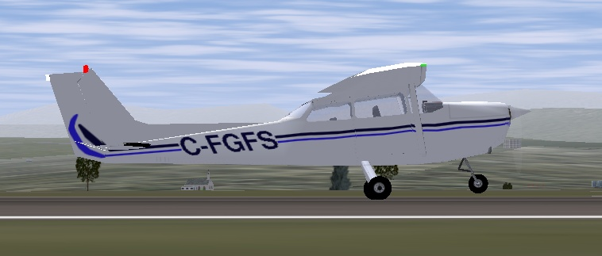
The reason why you must raise the
front wheel is it is not designed to roll at high speeds. It would
shimmy.
Question: if the front wheel no longer touches the runway, how do
you
steer the airplane? Answer: using the rudder. The rudder is the big
vertical moving part at the tail of the plane:
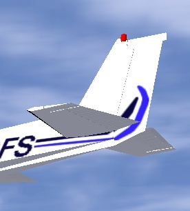
At air speeds above 40 knots, the rudder is adequate to steer the
airplane.
The rudder pedals steer both the front wheel and the tail rudder. So,
just move the rudder pedals.
Note: the front wheel and the tail rudder don't make the aircraft turn
exactly the same way. So when the
rudder takes over the front wheel, you must adapt the rudder pedals
angle. That means fast typing keypad 0
and keypad Enter (or hold the
left
mouse button down and tightly control the rudder with the mouse).
Once you trained all this, you are able to keep the airplane straight
on the runway when
taking off. (I hit the keypad Enter
key two times
before
increasing the engine RPM to start take-off.)
An advice: say the
airplane is heading too much to the right. You type keypad 0 a few times to make it turn back
to the left. Well don't wait till the trajectory
is corrected. Type keypad Enter
a short while before the airplane reaches the direction you
wish. Otherwise it will go turning too much to the left.
So, two methods exist to steer the airplane on the ground: the
differential brakes
on
the side wheels and the rudder pedals. This is essential to aviation:
at least two ways to perform each important function. This is
called redundancy.
If
one method fails, you use the other method, even
if that second method is less optimal. Sometimes three or even more
ways exist to perform a given task.
Don't overdo turning on the ground, especially at high speed. That
would make the
plane fall sideways and be damaged. Make use of the simulator to try
this out (fun mode).
(Why does the airplane drift to the left when it rolls on the ground,
making you have to compensate with a little push on the right
rudder pedal (about two keypad Enter
hits)? Main reason is the flow of air produced by the propeller. It
blows along the aircraft body, but also it turns around the
aircraft body. The upper part of that slight vortex pushes the vertical
tail to the right. That makes the front head to the left.)
You can center all yoke and rudder controls by typing 5 on the keypad. This is a good
preflight precaution. Note the trim is not centered by key 5.
A little problem in flight is the mouse drifts away from the center of
the screen. After a while, you get the yoke centered by placing the
mouse quite far from the center of the screen. The solution I use is to
click the right mouse button three times. Cycling through the three
mouse modes centers the mouse in yoke mode. Actually the click sequence
I use is slightly more complicated: right-click, lift the mouse,
left-click, right-click, mouse back down, right-click. This is hectic
but it ensures the view keeps centered too. (Note I almost never center
the mouse. I don't look at the mouse to know if the yoke is centered.
Rather I look at the horizon. That's the way I check the plane is
flying OK. (Only once in a while I look at the HUD to compare the trim
position and yoke/elevator position. I tune the trim to keep the
yoke/elevator centered during normal flight.))
So, two methods exist to turn in
the air?
Indeed. You can use the wing ailerons (steered by
the yoke/mouse)
or you can use the tail rudder (steered by the rudder pedals
/ the keypad 0
and keypad Enter).
Why these two ways? Because we need redundancy, of course, but
especially because they are very complementary:
- When flying close above the
ground, you cannot
dare bank the
airplane in order to turn. So you better use the rudder. Acting on the
rudder pedals makes the aircraft turn without banking.
- In flight, the rudder is a
dirty way to make the aircraft
turn:
- It makes the
aircraft present its flank to the airstream, hence the aircraft is
braked.
- The aircraft will turn very
slowly.
- You don't
get a very good control on the turn.
- At high flight speed the
centrifuge force will
be disturbing or even dangerous.
Using the ailerons
(the yoke/mouse), allows for efficient, fast,
reliable and comfortable turns.
- When you turn in flight using
the
ailerons, you still
need the rudder a little bit. You add a little bit of rudder (that is
the rudder pedals / Ins Enter
keys) to the movement. This
allows to perfectly compensate
the centrifuge force. You check this visually on the turn coordinator.
On
the picture below the little ball is pushed rightwards during a strong
turn to the right using the ailerons. That means you the pilot
endure a rightwards force too. Compensate this by pushing the right
rudder pedal (type the keypad Enter
key a few times). In
normal flight you use the rudder to keep the little ball centered.
- The rudder is vital when the
wings are stalled (see below).
Indeed during a
stall the wing ailerons become less effective or even useless.
- When the plane is close above the runway, the two side wheels
need to be at the same height above the runway. That means the wings
must be level with the horizon. The plane is not allowed to bank. You
keep the plane wings level with the horizon by using the
yoke/mouse/ailerons.
So, you tend to turn by using the ailerons in normal
flight and by using the rudder when
close above the ground at low speed. Yet one method never completely
cancels
out the other. You still need the rudder at high altitudes and speeds.
Reciprocally you have to use the ailerons a little bit
when close to
the ground, to keep the wings level with the horizon. (Actually you
must use the ailerons even when taxiing
slowly on the ground, when there are strong side winds, to prevent the
aircraft being tilted and blown aside.)
Engine control
An aircraft engine is a technological wonder. It is the most powerful,
efficient, lightweight and reliable fuel energy plant commonly
available.
On the bottom left, below the instrument panel you find the magneto
switch / engine starter:
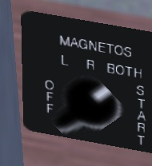
To see the switch, either type P
to get the schematic instrument panel or type Shift-x to zoom out (x or Ctrl-x
to zoom back in).
Move that switch with the {
and } keys
(use the Alt Gr
key on Azerty keyboards).
You probably know the fuel inside a car engine is lit by electric
sparks. A car engine contains an electric magneto to create the
electricity for the sparks. An airplane engine contains two
magnetos:
the "left" one and the "right" one (redundancy...).
When you put the magneto switch on OFF, both magnetos are switched off.
Hence the engine can't run. (Put the magneto switch on OFF is a way to
shut the engine down. Yet you shouldn't use it because it poises the
engine.) When you put the magneto switch on L you are using the left
magneto. On R you are using the right magneto. On BOTH you use both. In
flight you have to be on BOTH.
Why do you have the possibility to use magneto left and right alone?
This can seem useless, since you fly using both. The reason is each
time you start the engine in order to fly, you have to
verify each magneto separately. So you put the magneto switch on
L, then on R, slowly. That way you check each of them. If everything is
OK then you put the magneto switch on BOTH. Should one of the two
magnetos fail in flight, the other one will keep doing the job. The
failure of one magneto is rare, the failure of both altogether is
almost impossible. If during the pre-flight check it appears one of the
magneto fails, you have to cancel the flight.
You surely already started the simulator and typed { to shut the engine
down. So now you
want to start it back on. Type }
three times in order to put the magneto switch on BOTH. To start the
engine press the Space
Bar.
Keep it pressed a few seconds, till the engine is started.
You can also turn the magneto switch and start the engine by clicking
left and right of the switch (mouse mode). Type Ctrl-c
to see the two click sides highlighted by yellow rectangles.
If you turn the switch to OFF the engine noise stops. If you quickly
turn the switch back to L the engine starts again, though you didn't
turn the switch to START. The reason is the propeller was still
rotating. You should have waited till the propeller comes to a
halt. Then,
placing the switch on L, R or BOTH won't start the engine. (When the
engine is halted, always place the magneto switch to OFF.)
Now about the throttle:
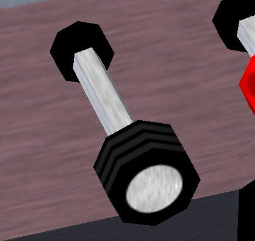
You already know you increase the engine power by pushing that throttle
lever
in
(Page Up key).
You decrease the power by pulling the lever out (Pg Dn key). You
can also click left and right of the lever (middle mouse
button for quicker moves, Ctrl-c to highlight the
left and right
halves).
What means "increase the power"? Does it mean you increase the amount
of fuel delivered to the engine? Yes, but this is not enough to fully
understand what you are doing. You need to be conscious the engine is
also fed with a huge amount of air. The engine pistons burn an
intimate
mixture of
fuel and air. Fuel alone wouldn't burn. Only a mixture of fuel and air
can detonate and move the engine pistons. So when you push the
throttle in, you increase both the fuel and the air fed to the
engine.
The amount of air compared to the amount of fuel matters a lot. The
proportion of the two has to be tuned closely. This is the purpose
of the mixture lever. The picture below displays the mixture lever, far
too much pulled out:
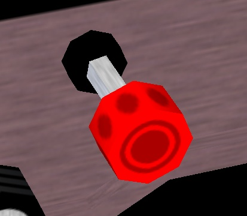
When the mixture lever is fully pushed in, you feed the engine with an
excess
of fuel. When the lever is pulled out completely, there is an excess of
air. The right position is in between. Usually quite close to fully
pushed in.
When you start the engine and when you take off, you need a fuel-rich
mixture. That means the mixture lever pushed in. A fuel-rich mixture
allows the engine to start easily. It also makes the engine a
little
more reliable. The
drawback is that a part of the fuel is not burned inside the engine. It
is
simply spilled away. This makes the engine more polluting, it decreases
the energy the engine can deliver and it slowly poises the engine.
Once in stable flight, you have to pull the mixture lever a little, to
get the optimal mixture. Check this out by doing the following. Start
the simulator. Put the parking brakes on with key B (that is Shift-b). Push the
throttle in to its
maximum. The engine RPM are now close to the maximum. Slowly pull on
the mixture lever (using the mouse in standard pointer mode). You will
see the RPM increases a
little. You get
more power, without increasing the fuel intake. You spill no more fuel
in the engine and it pollutes less. If you continue to pull the mixture
lever, the RPM will decrease back away. Because now there is too much
air. The excess of air slows the explosions down inside the pistons and
decreases the explosion temperature, hence the thermodynamic yield
decreases. You
have to tune in the optimal mixture. You can check you get the
optimal tuning by the fact you get the highest RPM. (Another
method is to check the engine exhaust temperature. Yet this does not
seem adequate on the simulator.)
Question: why a mixture lever? A car contains no mixture lever and
drives fine. There are two answers. First is a car is not an optimal
device. An airplane is, hence it needs fine tunings. Second
and more fundamental answer is a car operates at constant altitude. So
the mixture tuning can be tuned in once and forever by a garagist. A
plane rises in the air. The higher the altitude, the less dense the air
is. Hence the openings or pumps that let the air in the engine have to
get wider or pump stronger, in order to inject a same weight of air
inside the pistons. So when you gain altitude, you have to pull a
little on the mixture lever to keep an optimal fuel/air mixture. When
you descent back to the ground, you have to pull the lever back in.
(Actually, if you live at sea level and you move to a new location high
in a mountain country, and you take your car with you, you should ask a
mechanic to adapt the mixture tuning of your car. Should you drive your
car back to sea level, it will drive fine yet it will be less powerful
and more polluting... I suppose modern cars contain some electronics to
control this.)
You have to take up the mixture lever seriously. It allows to burn less
fuel fort a same speed and distance, hence fly farther away and pollute
less. It can also cause serious trouble. Suppose you go flying at high
altitude and pull on the mixture lever accordingly. Then you descent
back in order to land. But you forget to push the mixture lever back
in. The fuel/air mixture will become far too rich in air and the engine
will simply halt. You may think the engine is failing and panic, while
you simply have to push the mixture lever back in...
When landing, you have to tune back in a mixture that is a little too
rich in fuel. This means pushing the mixture lever in. That way the
engine becomes a little more reliable and will be better adapted to a
decrease in altitude.
I wrote above that placing the magneto on OFF is not the right way to
stop the engine. The right method is to pull the mixture level. First
pull the throttle out completely, to get the engine to minimum power
and fuel consumption. Then pull the mixture lever, till the engine
stops
because the mixture contains too much air. This ensures the engine
doesn't get poised by spilled fuel residues. Finally, turn the magneto
switch to OFF to ensure the engine won't start back accidentally (for
example because strong wind makes the propeller turn).
An important warning: you may think the RPM indicator reflects the
engine power. Wrong. Two things make the RPM increase: the engine power
and
the
airplane speed. To
check this, fly to a given altitude then pull the engine power to
minimum. Try out diving to the ground then rising back to altitude. You
will see the RPM varies strongly. It rises while diving and decreases
while rising, together with the plane speed. Though you didn't tune the
engine power. One pitfall of this is when you intend to tune the engine
power in for landing. Suppose you're flying fast. You know the
ideal RPM for landing is around 1,900 RPM. So you pull the throttle
till you get 1,900 RPM. You think you tuned in the appropriate RPM. You
think you shouldn't bother any more about it. But now the plane speed
decreases. Hence the RPM decreases. A few minutes later, you get the
low flight speed you wanted. You don't see the RPM is now at 1,000. Far
too slow. You will either lose altitude or stall. Or both. So, be
cautious with the throttle and with the RPM indicator. Either pull
on the throttle more steadily or be mentally prepared to push it back
in quickly.
Wings, attitude, speed, flaps
and stall
Fly with full engine power. Diving the nose a little makes you lose
altitude and
rising the nose a little makes you gain altitude. You may think this is
quite logical. The plane travels the direction it is heading; the
direction the propeller is heading. Yet this is not the appropriate way
to think about it. It would be fine for a rocket, yet not for an
airplane. A rocket is lift by its engine, while a plane is lift by its
wings. That's a huge of a difference.
Get a big rigid square of cardboard, hold it horizontally in your hand
with your arm stretched out and make it do fast horizontal movements
while rotating your torso. When the cardboard moves flat through the
air, it experiences no lift force. If you twist your arm slightly to
give the cardboard a slight upwards angle, you will feel it tends to
lift in the air. There is an upwards force acting on the cardboard.
That's the way a wing holds a plane in the air. The wings have a slight
upwards angle and lift the airplane. The more angle you give
the
cardboard, the more lift force. Till you give it too steep an angle.
Then you will rather feel a brake force (the cardboard is "stalling").
- When you pull the yoke, the
airplane nose rises up. Hence
the wings travel through the air at a steeper angle. Hence the lift
force on the wings is stronger. Hence the plane rises in the air.
- When you push the yoke, the
airplane nose dives. Hence the
wings travel through the air with less angle. Hence the lift force on
the wings decreases. Hence the plane descends.
What matters is the angle the wings travel through the air.
I wrote above that when the wings travel
through the air with no angle,
they don't lift. This is false. It would be true if the wings were a
flat plate like the cardboard. But they aren't. The wings are slightly
curved. That makes they create a lift even while traveling
through the
air at no angle. Actually, even with a little negative angle they still
create a lift force. At high speed the airplane flies with the wings
slightly angled towards the ground! This is not very important.
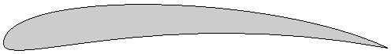
The angle the wings travel through the air matters. Something else
matters too: the speed. Take the cardboard again in your
hand. Hold it with a given slight angle and don't change that angle.
Check that the faster you move the cardboard, the more upwards lift
force it experiences.
- When you increase the engine
power, the plane increases
speed, the lift force on the wings increases and the plane gains
altitude.
- When you decrease the engine
power, the plane decreases
speed, the lift force on the wings decreases and the plane loses
altitude.
To make things a little more complicated:
when rising in the air,
the airplane tends to lose speed. When descending, it tends to gain
speed.
That's all a matter of compromises. If you want to fly at a constant
altitude and at a given speed, you will have to tune both the engine
power and the yoke, till you get what you want. If you want to descend
yet keep the same speed, you have to push the yoke a little and
decrease the engine power. And so on. You constantly have to act both
on
the engine power and on the yoke. (During a normal flight one doesn't
make things that complicated. Simply tune in a comfortable engine power
level then forget about it and rely on the yoke or trim.)
A very interesting exercise you can perform with the simulator is to
fly straight with full engine power. Get maximum speed while keeping in
horizontal flight. Then
you decrease the engine power to
minimum. And you pull steadily on the yoke to keep the plane at
constant altitude. The plane slows down steadily, meanwhile you
pull more and more on the yoke. Since the speed decreases the lift of
the wings would decrease, but you compensate the loss of speed by
increasing the wing angle. (This
proves the plane does not necessarily travel the direction its nose is
heading. In this experiment we make the nose rise in order to stay at
constant altitude.) Once the plane is severely slowed down, and the
nose is strongly heading upwards, you may hear a siren yell. That's
the stall warning. The angle of the wings is too strong. The wings are
now braking the airplane instead of lifting it. The plane quickly loses
altitude. Whatever you pull on the yoke, you're falling.
The only thing you can do is push the yoke forwards, make the nose
dive,
gain speed and glide towards the ground. Possibly push the engine
throttle back in
to full power.
Question: is it better to control the airplane speed and altitude with
the yoke or with the throttle? Answer: it depends on what
exactly you intend to do and on the situation you are in. During
take-off and landing the procedures are quite strict about the use of
yoke and throttle. That will be discussed in chapters below.
Let's talk about the flaps:
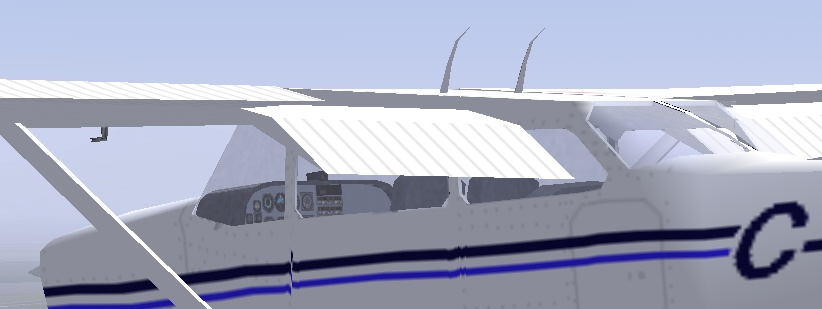
Deploy the flaps and pull them back in by using the flaps control lever:
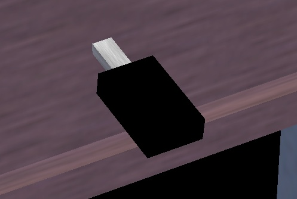
You can either click on it with the mouse or use the [ and ] keys. Key [ to retract the
flaps one step, ]
to deploy them one step. Type v
to view the plane from the outside and try out [ and ]. (On the schematic
instrument panel the flaps lever is located down right.)
There are four flaps steps:
- No flaps. For normal flight.
- One flaps step. For take-off,
when you want to gain
altitude
while flying slowly. Or during runway approach, while flying at
constant altitude.
- Two flaps steps. To brake the
plane, in order to lose
altitude
quickly, for example when you dive towards the runway to land.
- Three flaps steps. To lose
altitude even more quickly.
The role of one flap step is to increase
the wing lift. The wing lifts
more at a given speed. Hence you will get in the air a
little sooner during take-off. It also has the effect to make the plane
fly with the nose a little more downwards. This is
handsome: it
allows to keep an eye on the runway while rising in the air.
The flaps brake the
plane at high speed. So don't forget to pull the flaps back in.
My favorite way to know the flaps position is to type Shift-right arrow. Then quickly Shift-up arrow to get back to front view.
Another method I use is to make sure the flaps are fully retracted by
quickly typing [ several
times. Then type ] the exact
amount of times needed.
The role of two or three flaps steps is solely to brake the plane. This
is
mandatory when landing, because the airplane glides very well. If you
cut down the engine power completely, sure the plane will descend, yet
too slowly. You need to deploy two or three flaps steps in order to
brake and
really descend towards the ground.
Trying to take off with two or three flaps is a bad idea. This can
sound fun, but beware: suppose you deployed one flaps to take off. Yet
you forgot to pull the flaps back in. Later on you encounter a
emergency situation and you need to gain altitude very fast. You deploy
one flaps step. Actually you add one flaps step to the flaps step
already out. So now
you have two flaps steps. Hence the flaps are braking and you fail to
gain altitude... Whenever you feel
the plane is behaving really odd and seems not be able to rise in the
air, or even keeps falling whatever your efforts and the engine power,
think maybe you deployed more than one flaps steps.
Do not deploy one flaps step above 110 knots. Do not deploy two or
three flaps steps above 85 knots.
Redundancy... What do you do if the flaps don't deploy? Answer: push
the rudder pedals on one side. This will make the plane present its
flank to the air stream and brake. (Compensate the turning by using the
ailerons (yoke).)
A stall is an emergency situation, at whatever altitude. It means the
plane is flying too slowly hence the wings travel through the air at
too strong an angle. The wings suddenly start braking the plane instead
of lifting it. It is especially dangerous when close above the ground.
It is dangerous even at high altitude because you lose part of
your control over the plane. It can make some airplanes go into a
deadly spin. During a normal flight, a stall should never occur. As a
pilot you have to constantly keep the plane well above stall speed.
Once the stall siren yells, it means things already have gone very
bad. First of all push the yoke/mouse, to decrease the angle of the
wings. Possibly rely more on the rudder to turn; indeed the ailerons
are located on the wings and during a stall the wings are no more
reliable. See http://en.wikipedia.org/wiki/Stall
. (Note some little aircraft like the Piper Cub are designed to
land using a controlled stall. Planes like the Cessna 172 are designed
to make stalls less likely to occur and less deadly when they occur.
For example that's one reason why the wing extremities are square. One
problem with the legendary WWII fighter plane Spitfire was during too
tight turns the inside wing would suddenly stall completely and not the
outside wing.)
A realistic take-off
By now I assume you are able to keep the airplane on the runway while
taking off (rudder) and you're able to fly straight, descend
peacefully, gain altitude steadily, make gentle turns (yoke)... No need
you perform this all perfectly. Yet a basic and approximate control of
the aircraft has been acquired.
Start the simulator, put in one step of flaps (]), push the engine
to maximum (hold Page Up
down for 8 seconds) and use the rudder (keypad 0 and keypad Enter) to keep
roughly aligned with the runway center line.
Rules:
- You are not allowed to keep
the front wheel on the ground
above 40 knots. It would shimmy. (Front wheels that wouldn't shimmy
exist
yet they are bigger and heavier.) When reaching 40 knots you have to
pull on the yoke to lift the front wheel a little (don't overdo).
- When close to the ground (I don't know the exact limit) you have
to keep the two rear wheels at the same height above the runway. The
reason is any moment you will or may touch the ground. You need to
touch with both two wheels altogether. That means you need to keep the
wings level with the horizon. Hence you cannot make use of the
yoke/mouse/ailerons to turn. Instead you use the rudder pedals to turn.
(Since you fly around 70 knots, this yields not too much sideways
force problems.) You do use the yoke/mouse/ailerons, yet for another
purpose than turning: to keep the wings level with the horizon.
- When lower than 1,000 feet
altitude, you are not allowed to
fly slower than 70
knots speed.
That's because a blow of wind from the rear can occur any moment. You
need to fly fast enough so that wind blows won't make the plane fall to
the
ground.
- When lower than 1,000 feet,
you are not allowed to fly much
faster
than 70
knots. You
wouldn't be able to make maneuvers quick enough. (And you would be more
destructive if you hit something.)
- While taking off you are
supposed to stay aligned with the
runway (using the rudder). That way you can land back quickly should a
problem occur. Should a burst of wing make the plane loose altitude and
touch the ground, better touch the runway...
So, you need to take-off and rise in the
air at a steady speed
around 75 knots.
Problem: since the front wheel is slightly lifted and the flaps are one
step
deployed, the plane will rise from the ground already at 55 knots.
That's well below the desired flight speed of 75 knots. What then?
Answer: as soon the two rear wheels lift from the ground,
push the yoke forwards a little. Keep the plane close above the
ground. (The aim of this is: should a wind blow from the rear occur,
the plane will fall from only a few feet hight.)
Keep the plane close above the
ground while accelerating, till a speed of about 70 knots is reached.
Then switch to the opposite mode: now you must pull on the yoke to
prevent the plane from going above 75 knots. Force the plane to
rise in the air, so it doesn't gain speed. Keep in control. If the
speed goes below 75 knots, push a little on the yoke. If it rises above
75 knots, pull a little on the yoke. Till you reach 1,000 feet
altitude.
While rising towards those 1,000 feet, use the
rudder to turn left and right to keep
the airplane aligned with the runway, high above it. Personally I keep
tightly aligned during say the first 300 feet, then I drift out of
course maybe a few degrees. You need to keep aligned with the runway
for several reasons:
- In order to be
able to land back safely and quickly should an emergency occur. The
higher you are in the air and the shorter the runway, the less
important this is.
- Because below 1,000 feet you are not allowed to fly over
buildings or cities. You only have the right to fly above the runway
and
over the flight route that follows the runway. (Above empty land you
are allowed to fly as low as 500 feet.)
- For navigation. Once you get at 1,000 feet you better know what
direction you are flying. The direction of the runway is the most
obvious choice.
While you turn using the rudder pedals, use the yoke/mouse/ailerons to
keep the
wings level with the horizon. (Once clearly in the air I stop using the
rudder and I use
the ailerons/yoke/mouse to turn. I just
make sure the rudder is centered.)
If you want to check the position of the runway but you can't see it
because it is hidden by the motor cover, push the yoke/mouse a short
while to make the nose dive a little bit for a second. Another trick,
less precise, is to look for a building, a hill or something far in
front of the runway. You keep aiming that thing while rising in the air.
Don't keep your eyes too much on the speed indicator while your are
rising above the runway. Rather look at the horizon and at the engine
cover. The top of the engine cover should roughly match with the
horizon
line:
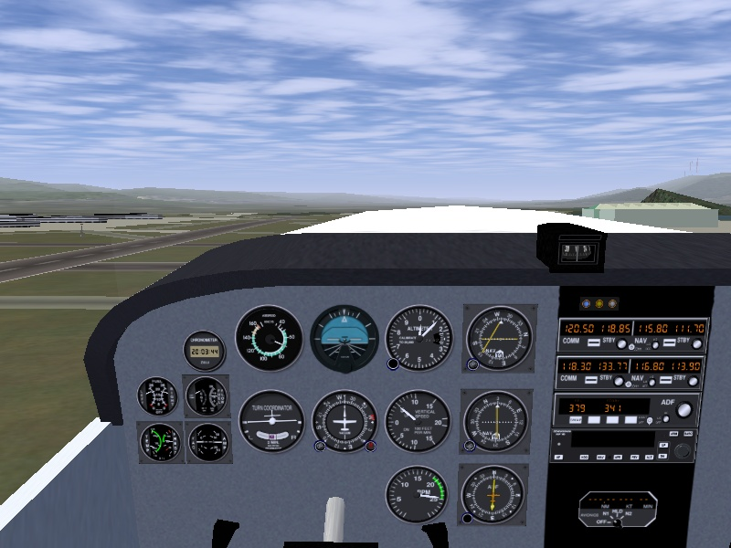
Once you reach 1,000 feet, retract the flaps ([) and push the yoke
a little. You are know allowed to gain speed. Let the plane rise
steadily to say 2,000 feet, flying at roughly 85 knots. Decrease the
power level a little so the
RPM needle gets in the green zone (Page
Down). Turn calmly
towards your intended
flight direction. Use your time to optimize the mixture. You're in
flight.
Don't forget to center the rudder. If the rudder is strongly pushed to
one side, this will seriously brake the plane. It makes the plane move
sideways through the air, with its flank aerobraking.
!
During a real take-off
you
must keep in
touch with
the control tower. You also have to constantly look in all directions
to check no other airplane is coming in your direction.
An aviation classic is the "ground effect". It's the fact a wing lifts
better when close above to the ground. That too makes the wheels leave
the ground at quite a low speed, a speed at which the airplane cannot
really fly. While you are accelerating a few feet above the runway,
you are in ground effect. If you know about it, ground effect is an
advantage because it makes flying close above the ground more secure.
The airplane behaves a tiny little bit like a hovercraft. If you are
not aware of the ground effect, it can cause problems. For example it
can make you think the aircraft has enough speed to rise in the
air, while it has not. See http://en.wikipedia.org/wiki/Ground_effect
!
During a real take-off, if the engine halts below 500 feet, you are not
allowed to turn and try to glide and land back on the runway. You have
enough height to try a landing back only if above 500 feet when the
engine halts.
During the take-off roll on the runway I much enjoy the possibility to
control the rudder by holding the left mouse button down. Before the
airplane starts rolling I pull a little bit on the yoke/mouse, so the
front will rise once the speed increases. Then I press the left mouse
button and keep it pressed during the acceleration. Once the airplane
soars, I release the mouse left button. I press it only once in a
while, just a second, to adjust the rudder tuning. While the airplane
reaches 500 feet, I tend to center the
rudder progressively, by shortly pushing the left mouse button down a
few times and gradually moving the rudder towards its neutral position.
What direction am I flying?
Four basic methods exist to know what direction you are flying:
- Look through the windows.
Try to learn and recognize all
sorts of ground features, like hills, bridges, cities, forests... The
Sun and the Moon are essential features yet clouds can cover them and
they move trough the sky. Looking through the windows can be quite
hectic on a flight
simulator. You only have a narrow view on the virtual outside world.
Using two more displays, placed left and right of the main one, will
help. Yet this is expensive and not mandatory. Several ways exist to
allow you to pan your virtual head inside the airplane:
- Use the arrow keys to
look frontwards, backwards,
leftwards and rightwards.
- Use Shift and the keypad
keys to look in the four
directions mentioned above and in four diagonal directions in-between.
- Put the mouse in pan
mode (right button, <->
cursor look). This allows
to look in just every direction, including towards the sky and towards
the ground. This method is great while the automatic pilot is on. It is
a little dangerous otherwise, because the plane will bank or fall while
you're looking all around. Click the left mouse button to quickly get
back to the default forwards vision. Hint: if you click the left mouse
button to center the vision back, by the time you click the right mouse
button to go out of mouse look mode you will already have panned a few
degrees away from the forward view. This is not a serious problem,
except for the fact it prevents the instrument panel to appear when
typing P. A
solution is to
lift the mouse before you click the left button. Then click the right
button. Then let the mouse back down. (While the automatic pilot is on
and you are looking all around, use the x, X
and Ctrl-x keys to zoom in
and out. Use the z, Z
and Ctrl-z keys to dissolve
the mist outside.)
- The Compass (picture
below). That is the indicator located
above the
instrument panel. The compass is a very simple and classical, yet not
perfectly reliable instrument. When flying over some places, magnetic
perturbations on the ground can make the compass tell nonsense. Also,
the compass never show the real direction of the North, East or South.
Rather it shows a direction a few degrees aside from the real direction
(depending on the country you are in). Close to the poles the error of
the compass becomes really strong.
- The directional gyro
(picture below). It is started before
take-off and keeps its
initial heading for hours. It simply tells you how many degrees you
turned to the left or to the right. You are supposed to tune in the
right direction of the North Pole before you take off, using the knob
bottom left of the instrument (mouse pointer mode, click left or right
half of the knob, middle mouse button to move faster, Ctrl-v
to highlight halves). (The knob bottom right is used to tell the
automatic pilot what direction you wish to fly (HDG
= "heading").
- The clock. If you make
steady turns, at the angle proposed
by the turn indicator, a 180° turn takes 60 seconds whatever
the flight
speed (yet it is 50 seconds on FlightGear...).
!
During a real flight in
a
real
airplane, you
are supposed to cross-check all direction indicators once in a while.
Landing
When I was a boy, I had a simple yet fairly good flight simulator on my
Sinclair ZX Spectrum
home computer. I could do everything with it, except
landing. I always crashed the plane or reached the end of the runway.
One day a real pilot saw me trying to land. He had never seen a flight
simulator. He had no problem to recognize each flight instrument
and ground features on the screen. He told me what to do. Decrease
engine power, increase engine power, push the nose down, pull the nose
up, turn a little left, turn a little right, get the flaps out... We
made a perfect landing on the first attempt.
Just like for take-off, landing is partly a procedure, partly rules you
have to stick to. You have to constantly adapt.
Same basic rules apply as for take-off, yet in reverse order:
- Stay at 70 knots once below
500 feet. Descend towards the
runway while keeping at 70 knots.
- After the final rounding, hover close above the runway
while decreasing speed from
the
70 knots flight speed down to the roughly 55 knots landing speed.
- Touch the runway
with the two side wheels. Keep
the front
wheel from the ground till the speed is below 40 knots.
(If you know what you are doing you are allowed to use a speed a little
below 70 knots: 65 knots.)
Three rules are essential during the
whole procedure of landing:
- Tune the speed using the
yoke/mouse/elevator. Push the yoke/mouse if you are
flying
below 70 knots. Pull the yoke/mouse if you are flying above 70 knots.
No
matter this makes you gain or lose altitude (except these causes a
danger of course).
- Tune the altitude using the
engine throttle. Add power if
you are too low, retract power if you are too high.
- Once approaching the ground,
use the yoke/ailerons to keep the wings
level with the horizon. Turn using the rudder.
The reason why the yoke/elevator is used to tune
the speed is this method
allows far fast reactions and fine tuning. It is more important to tune
the speed closely than the altitude.
Of course, if you are both a little too high and a little
too slow, simply push the yoke a little and both problems will be
solved altogether. No need to use the throttle. Use your mind...
You have to get aligned with the runway. That means your flight
direction has to match the middle line of the runway (drawing (a)
below). In order to get this, don't aim at the start of the runway (b).
Rather aim at a fictitious point well ahead of the runway (c). And
begin
to turn gently towards the runway well before you reach that fictitious
point (d). Note the turns and bankings you make for these flight
corrections are often very soft. You wouldn't even notice them on the
turn coordinator. This is one example where you better rely on the
outside horizon line than on the inside flight instruments.
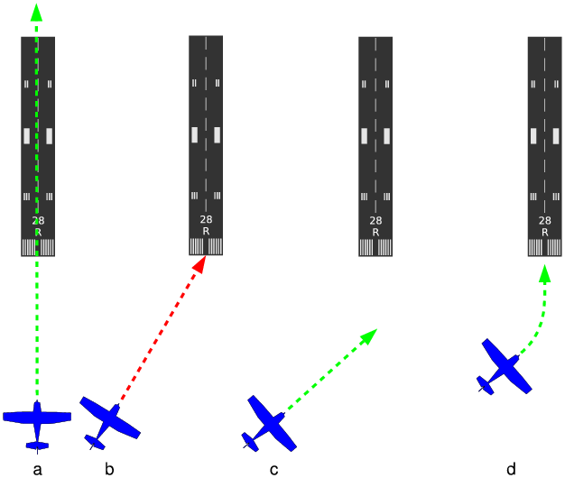
Try to get aligned with the runway as soon as possible. Constantly
apply the alignment procedure. The closer you come to the runway, the
better the alignment should become.
My favorite landing procedure for the Cessna 172p is roughly this one:
- Far from the runway, yet
already heading towards it,
start decreasing the
speed and let the plane descend towards 500 feet.
- Check the rudder is neutral.
Otherwise the plane will be braking and more engine power is needed.
(During a landing with strong sidewinds, one of the two standard
procedures implies to keep a strong rudder angle. Then you tune more
engine power or less flaps.)
- Once the speed is below 100
knots, deploy one flaps step (]).
- Once an altitude of 500 feet
is reached, keep that
altitude.
Once a
flight speed of 70 knots is reached, keep that speed.
- You need an engine RPM of
roughly 1,900. That's the minimum
of the
green zone right of the tachometer. (Do not try to tune in exactly
1,900 RPM. Tune what suits to keep an altitude of 500 feet.) (Try to
make frequent little tunings, instead of seldom heavy tunings.)
- Control the
altitude using the engine. Add a
little engine power if you are too low (type a few Page Up), retract
a little power
if you
are too high (type a few Page
Down).
Allow
the altitude "plenty" of time to get right. No need to get exactly 500
feet. (Be foreseeing: add a little motor power even while the altitude
decreased only very slightly. Retract power even while the desired
altitude is not yet attained...)
- On the other hand be firm
with the flight speed. Keep a tight and quick control on the yoke/mouse
to keep 70 knots. If the speed is lower than 70 knots, push the yoke to
gain speed (no matter you lose altitude). If you are above 70 knots,
pull the yoke to lose speed (again, no matter this makes you gain a
little altitude). Don't panic if the speed rises to 75 knots or
decreases to 65 knots. But keep in mind you can really get in trouble
if you approach a short runway at 80 knots.
- Fly at constant speed and
roughly steady altitude towards
the runway. Try
to align
with the runway. (Personally I never perfectly succeed in doing that.
I
always get on the runway plunging from a side angle. Yet I'm such a
good virtual pilot the final position a few meters above the runway is
always fit.)
- The airplane may oscillate a
little. Don't bother. Just
keep in
control using the yoke.
- Check the rudder pedals.
Either neutral or one or
two key
types to the
right.
- You're flying at constant
altitude and speed. Once the beginning of
the runway passes under the engine
cover, it's
time to take things up seriously:
- Type ]
two times, to
deploy the full three flaps steps. Immediately push the yoke/mouse
forwards, to make the aircraft plunge to the ground. Indeed, the full
flaps deployed make the plane brake. To compensate the braking and keep
70 knots, you make the plane dive to the ground. Watch the speed
indicator closely to keep 70 knots (using the yoke/elevator).
- The dive makes you head
towards the runway. You will
soon
become aware that the plane is going towards a point of the runway
much further than the start of the runway. There is nothing
wrong
with that on a long runway. Yet you should train to land on short
runways. In order to correct the dive and head towards the start
edge of the runway, decrease the engine power. (On the Cessna 172p
this often leads to power to minimum, while on most other aircraft
you keep some power tuned in.) The picture below is a snapshot
from a
good dive. (Note the vertical speed indicator shows -500 feet/minute. I
never use that indicator. I solely aim at the runway edge and
its 12 white strips. Anyway, -500 feet/minute is the right descend
speed...)
- Closely keep the speed at 70
knots by pulling and pushing
the
yoke/mouse. Calmly increase and decrease the engine power in order to
head the
plane towards the start line of the runway. Don't bother to aim exactly
towards the start of the runway. No matter you arrive a little
before the runway start or a little further from it. Provided
you arrive at
70 knots.
- If you suddenly realize you will arrive
really far before the
beginning of
the runway, possibly retract the flaps to one step ([). You can also let
the engine roar to maximum power for a few seconds. If you followed the
procedure you shouldn't need to do such extreme things...
- Any moment, if you feel
things are going wrong, throttle
to full
engine power, retract the flaps to one step and gain back altitude
(keep the
speed above 70 knots). Whatever wrong happens; you arrive aside from
the
runway, too far before the runway, at a wrong speed, a swarm of birds
is passing, whatever... abort the landing, get back to altitude and
retry.
- The "rounding" is the most
impressive part. You are like
going to
crash on the runway. Yet you will pull the yoke/mouse
before it's too late. Don't pull on
the yoke too
early. Don't pull on the yoke too firmly. Once you are really close to
the runway (for a beginner: once you are convinced it's too late and
you are going to smash in the ground), pull the yoke/mouse gently and
bring the plane in a steady flight above the runway. That's the
rounding. Use the rudder
pedals (keypad 0
and keypad Enter)
to keep aligned with the
runway. Use the yoke/mouse/ailerons to keep the wings level with the
horizon (so both left and right wheels will touch the runway at the
same
time). (During the rounding, ground effect contributes to your security
and ease.)
- Now you're flying close
above the runway (in ground effect), throttle the engine
power to
minimum (this is mandatory). Deploy full flaps if they weren't already
deployed completely (this is not mandatory on a long runway). (Don't
shut the motor down (except when landing the virtual Mustang
P-51D).)
- Keep the plane flying close
above the runway. As the speed
decreases
from 70 knots down to 50 knots and below, keep pulling more and more on
the
yoke/mouse, steadily. Keep the plane in
the air while ensuring it stays really close to the surface of the
runway. Steadily lift the nose, up to quite a strong angle, till the
yoke is pulled to its maximum. Make sure the plane does not gain back
altitude (don't look at the
instruments, look at the outside).
- Don't land the plane. Let it land by itself, once the speed is
too
low and the nose is high up in the air. This also makes the
front wheel stays above the runway, when the plane finally renounces to
fly, calmly sinks in and the two side wheels touch the runway. (You
have to be
very cautious with the yoke during this phase. If you pull it too
hard
or too soon, the plane will rise back in the air, at a speed below
70
knots...)
- Use the rudder pedals to keep the
plane rolling in the middle of the
runway
and straight while the speed decreases. Keep pulling on the yoke, to
the maximum, to maintain the nose high up.
This makes the wings are at
a high angle and brake a lot. I don't know the exact limit to this; how
much you are allowed to put the nose high in the air. (Beware:
if the speed wasn't slow enough (the nose high enough) when the
airplane touched the ground, and you now pull strongly on the yoke, the
plane will rise back in the air...)
- Once rolling at a speed below 40 knots, push
the yoke/mouse, to get
the front wheel down. Beware: check the rudder position first. If it is
too much to the left or to the right, the plane will turn violently
once the front wheel hits the runway. The plane may even fall aside and
hit the ground with a wing tip. So, once you checked the rudder, lower
the
nose to make the front wheel touch the runway.
- When the front wheel is on
the ground, you are allowed to
use the brakes. Your choice. Keep the b
key down. Be
prepared to release it should a problem occur.
It you forgot to almost center the rudder, braking can go really bad.
Once the plane is halted or at low
speed, you can release the b
key (if you used
it) and add a
little engine power to taxi to the parking or hangar. Don't forget to
retract the flaps (type [
three times).
To shut the engine down:
- Engine throttle to
minimum (hold Page Down
down for a
while).
- Pull the mixture lever to
halt the engine (mouse in pointer
mode, click on the left of the red mixture lever to pull it
out).
- Rotate the magneto switch to
OFF (a few hits on {).
To set the parking brakes in, type B.
You must be mentally prepared to abort
landing
anytime. Whatever happens: an order from the control tower, a wrong
speed or landing angle, a wrong alignment with the runway, a strong
blow of wind, birds flying over the runway... retract the flaps to one,
push the engine to maximum and get
back to a higher altitude. Then either you restart the landing
procedure or you go for another airport. The pride of a pilot is to
make only safe landings.
The procedure above tells you to steadily rise the plane nose, till you
get a really strong tilt, with the yoke pulled to the maximum. During
your first landing trials and when landing on a long runway, it is not
mandatory you pull the nose very high up. A honest yet mild tilt will
be enough. The consequences are the plane will need more runway
length to stop and the wheels will roll at a higher speed.
Don't try to find "the ideal distance" to start diving to the runway.
The procedure above proposes you start diving when the white motor
cover starts eating the runway edge (provided you fly at 70 knots with
one flaps step) (the altitude doesn't matter). Best is you train
to land while starting the dive earlier and while starting to dive
later. You need to be trained to increase or decrease engine power
according to what is needed. During a real landing, depending on the
airplane weight, the wind speed and other random things, the "ideal"
moment to dive is unpredictable.
If you want to make things simple for your first landing trainings,
make use of the
fact the runway at
KSFO is very long. Wait a little more before you begin the dive: let
the nose "eat up" the whole length of the leading part of the runway;
let the successive pairs of white strips on the runway disapear below
the airplane nose. Then lower the flaps
to
three steps and decrease the motor to minimum. Dive to keep the speed
to 70 knots and try to keep aligned with
the runway. You will end the dive quite much beyond the runway
start and at a high vertical speed, but who cares. Make the final
rounding. Keep aligned with the runway and
try to fly close above it. Keep
pulling more and more on the yoke/mouse, to keep the airplane flying.
Yet avoid it rises in the air. Till the wheels touch the ground. Once
the speed is below 40 knots, push the
yoke/mouse and keep key b down
to brake.
If you are a newbie, you probably won't succeed to apply the procedure
perfectly. My advice: invent your own, more simple procedure. Then
regularly come back to the procedure listed here and read it again, to
get hints and
ideas to better your procedure. Till you get it. Also best read other
landing procedures. Send me a mail if you find interesting differences.
Analyse your own procedure. If it implies to fly at very low speed, it
is dangerous because a blow of wind from the rear will make the plane
fall. A probable problem with your procedure is the plane needs a lot
of runway length to land. If you look at the runway start you will see
there are successive groups of white strips. I land the Cessna 172
always well before the last group of
strips. If you are a real beginner, your procedure sure will make the
plane tilt over or crash once in a while. The procedure listed here is
safe.
Train your procedure, again and again. The more you train it, the more
you will become able to use the one listed here. That's the way I
learned to land myself...
!
In a real airplane, you
must keep in touch with the
control tower constantly while landing. You will be contacted by the
control tower or you have to contact it in some key parts of the
landing. If you don't contact the control tower just after landing, an
emergency rescue team is immediately underway. If there is no good
reason you didn't contact the tower, you will really be in trouble.
Maybe you'd like to train landing without having to take off
and circuit in order to head for the runway and land. Type the command
line displayed below in a terminal window to start the simulator in
flight and heading for the runway. The aircraft is placed 6
miles ahead of the runway, at an altitude of 1000
feet and a speed of about 120
knots.
fgfs --offset-distance=6
--altitude=1000 --vc=120
Possibly add --timeofday=noon
--geometry=1024x768
parameters if you need daylight and a bigger window (choose anything
you
need instead of 1024x768 (I favor 1200x900 an my screen)). FlightGear
command
line parameters are listed in http://www.flightgear.org/Docs/InstallGuide/getstartch4.html#x9-330004.4
Note the parameters above make the aircraft have some trim tuned
in. Yet you need another trim tuning during the
horizontal steady flight towards the runway. See the chapter below,
about the trim. If
in doubt, just center the trim.
During the landing I'm not capable to switch the mouse between rudder
and yoke control a
fast and reliable way (using the left mouse button). I tend to press
the mouse button and keep it pressed once the rear wheels roll over the
runway. Before the wheels touch the runway, I make just very short
presses of the left mouse button to quickly adjust the rudder tuning.
Once the wheels started to roll, I make just short releases of the left
mouse button to adjust the yoke tuning.
Once you are trained, you no more need to do a long horizontal flight
at 500 feet and 70 knots to get to the runway. Instead you can descend
all the way from your flight altitude and at a higher speed. You should
be able to get at 500 feet and 70 knots a short while before the final
dive.
Landing at 65 knots instead of 70 knots allows to use a much shorter
runway length. Yet to benefit from this you better train landing at 65
knots.
The trim
The trim is that dark big vertical wheel with gray dots located at the
middle below the instrument panel:
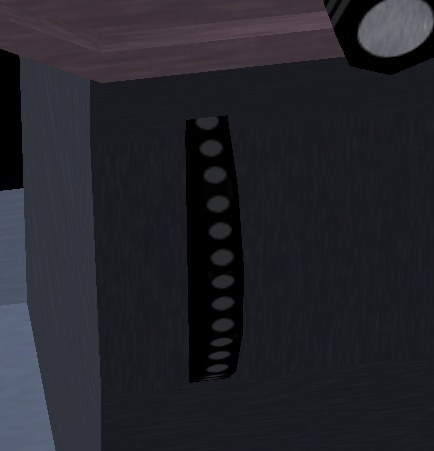
On FlightGear, the keys Home
and
End are used
for the trim. You can also
click on the upper
or down half of the trim wheel (Ctrl-c for highlight).
It's an important control. I didn't mention it much, for two reasons.
First
is the mouse makes the trim virtually useless. This is quite unnatural
of course.
People with a force-feedback joystick or yoke will feel the need for
the trim, as well as people flying real airplanes. Second is
the trim doesn't operate on the particular version of FlightGear I was
using till recently. Too bad...
During take-off the trim must be neutral. You have to check the trim is
centered before every take-off. Also if you abort a landing and start
rising back to altitude, first put the trim to neutral. Otherwise the
plane may buck.
Once in flight, you keep the mouse/yoke at a given forward (or
backward) position.
That position is optimal to keep the plane at a roughly steady
altitude. In a real airplane, this means you would constantly keep
pushing (or pulling) on the yoke. That would be quite uncomfortable.
This is where
the trim falls in. You tune the trim in to impose a
default elevator
angle. Then you have no more to push or pull the yoke constantly, you
just use the yoke for little tunings. In other
words: make a global rough tuning with the trim and fast little tunings
with the yoke/mouse.
During landing, while flying at constant speed of 70 knots and constant
altitude of 500 feet, same applies as for a steady flight: try to get
the yoke/mouse towards neutral position by tuning the trim. On the
Cessna 172p this means trim on neutral too.
When starting the final landing dive and well before the rounding you
are supposed to "pull" the trim to a little further from neutral. That
is tend to make the plane nose rise. Yet you push the yoke/mouse to
compensate and keep 70 knots, of course.
To know the trim position, use the HUD (h,
H and I) or the I-shaped indicator on the
schematic instrument panel
(P).
The trim movement is very slow. Be patient.
What then?
Once you master the content of this tutorial, you can claim to have a
basic understanding of what piloting is about. You still
lack key
knowledge and training, like these:
- How to taxi, take-off and land
under crosswind.
- How to make emergency landing on very short fields, possibly with
no engine power.
- How to navigate according to
the rules, charts, laws, radio
beacons and crosswinds.
- How to draw a flight plan.
- How to deal with the control
tower and with other airplanes.
- How to deal with the failure of
every possible part of the
plane.
This last part is very important and lacks
support in FlightGear.
Of course you can decide to no more use a given control or glue a
sticker on your screen to hide away an instrument. Yet this is not
enough. A really bad instrument failure means the instrument still
seems to operate correctly. Yet it doesn't, and whats it does or
displays endangers you.
FlightGear contains bugs and its flight control through the keyboard is
not optimal. Consider those problems as a training for real aircraft.
Problems on real aircraft are not the same. But there are problems.
When FlightGear suddenly puts you in a critical situation due to a bug,
consider this as a training. Try to solve the situation fast and
efficiently while keeping calm. It's not a bug, it's a feature!
There are some strong differences between a flight
simulator
with minimalistic control hardware and a real airplane. The fact the
mouse exerts no counterforce, the
fact you don't feel the vibrations and forces inside the airplane... On
the one hand, some aspects of flying are made easier on the simulator.
On the other hand, a real airplane constantly gives all sorts of
valuable feedback you don't get with a simulator. One thing is common
to
the simulator and the real airplane: while landing you'd wish you had
four arms and two more brains.
One very interesting thing is to try out other virtual airplanes. The
Cherokee Warrior II, for example, which you get with the --aircraft=pa28-161
command line parameter. The Cherokee Warrior II has some
advantages upon the Cessna 172p. Thanks to its low wings it is far less
sensitive to crosswind. Fully extended flaps are more braking and
allow to land on a much shorter distance. Yet you have to get
used to the differences of the Cherokee Warrior II for the landing:
- During the steady horizontal flight before landing, the trim must
be pulled a little below neutral in order to get the yoke oscillating
around neutral.
- The optimal tachometer RPM during landing is at a lower RPM than
the tachometer green zone. Roughly, keep the needle vertical.
- Only put one more flaps step (which makes two flaps steps
deployed) when the dive towards the runway begins. Don't decrease the
motor throttle too much.
- If you keep it to two flaps deployed during landing, the hover
above the runway
and the final roll will be similar to the Cessna 172p. Yet if you
put the third flaps step in (after the final
rounding), the plane will brake firmly. It will very quickly touch the
runway then come to a near halt. Be prepared to lower the front wheel
very soon. (It is possible to use the third flaps step during the dive
towards the runway, instead of tuning the engine power down.
Oscillating between two steps and three steps allows to aim the runway
start. Yet keep two flaps steps and tune the motor is obviously easier.
An interesting stunt is to fly stable till nearly above the runway
start, then tune the motor to minimum and deploy three flaps steps. The
plane almost falls to the runway. It's impressive but it works.)
The Piper J3 Cub is very different from the Cessna 172p. Use the --aircraft=j3cub
parameter to get it. You pilot the
Cherokee Warrior II
and the Cessna 172 quite the same way. Their landing procedure is quite
the same, with
just one key difference, about the flaps. Forget everything about them
when it comes to
the Piper J3 Cub. My take-off procedure for the Piper Cub is to
fully pull the yoke in then throttle the motor to maximum. Once the
front wheels clearly rise from the ground, push the yoke back out,
towards a
normal flight. The landing procedure... well in fact there are two
different landing procedures:
- The first one involves the fact the Piper J3 Cub is a very
lightweight airplane. While still high in the air, throttle the motor
down to minimum and slowly pull the yoke completely in while the speed
decreases. This slows the
plane down till it begins a steep descent to the runway. Keep the yoke
pulled in. The wings seemingly act as a parachute. The plane hits the
ground and bounces on its
legendary gummy landing gear. It rolls at very low speed. While still
pulling the yoke in to maximum, you push in the wheel brakes (key b).
- Second procedure lets you land the plane like a "normal"
airplane. Yet with no flaps available and at quite a lower speed. Once
the plane rolls over the runway, you push the yoke to the maximum.
This rises the tail high in the air. You would think the propeller will
hit the runway or the airplane will tilt over and be damaged. But
everything's fine. The wings are at a strong negative angle and this
brakes the plane. Once the speed is really low, you pull back the yoke
completely, to the other extreme. The tail touches the ground and the
nose is high up. Then you use the wheel brakes. (If you use the brakes
too early, the plane nose will hit the ground.)
The Cessna 172p and the Cherokee Warrior II are front wheel airplanes.
Take-off and landing with a tail wheel airplane is more difficult. You
have to tightly use the rudder pedals when rolling over the runway. The
yoke often needs to be pulled backwards to the maximum. I'll discuss
this more thoroughly once I get more experience and knowledge about
tail wheel airplanes.
Go to the FlightGear documentation page for more tutorials and
reference pages: http://www.flightgear.org/docs.html
I learned new things about English and about FlightGear thanks to Benno
Schulenberg and Vassilii
Khachaturov.
Thanks to Mark Akermann and Paul Surgeon for their
remarks and help. Thanks to the FlightGear mailing list users for
their
hearty
welcome. Thanks to 4p8 webmaster my
friend Frédéric Cloth
for the web space used by this tutorial.
 ]
]